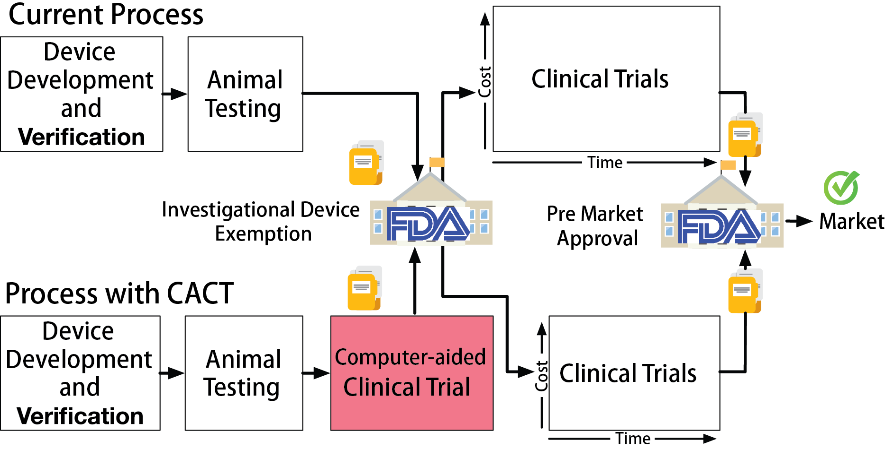
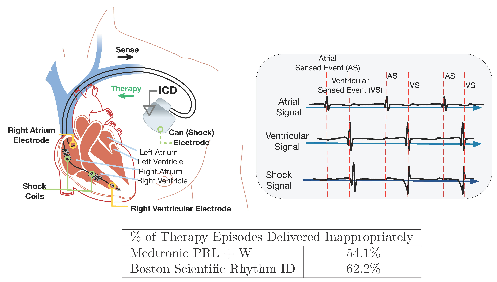
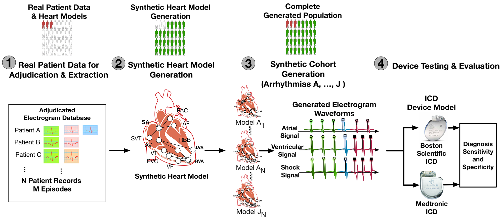
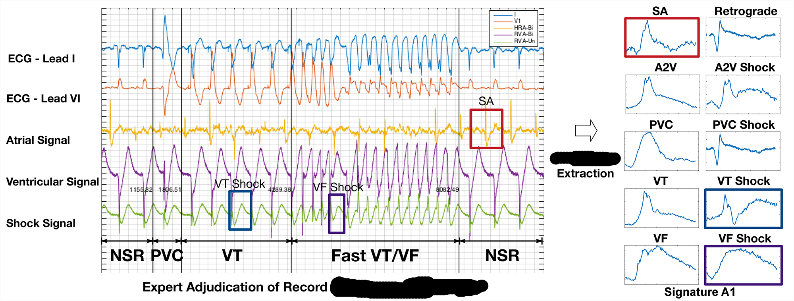
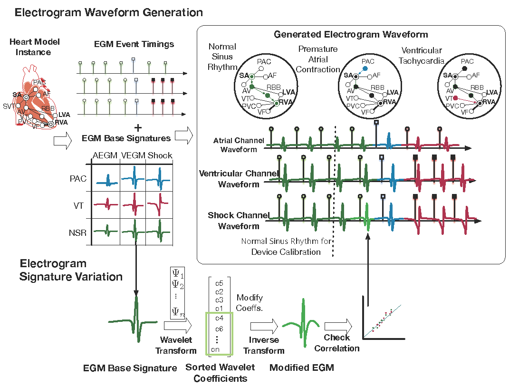
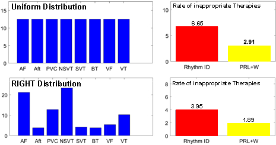
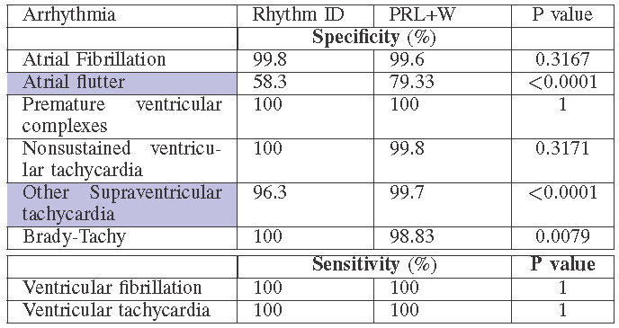
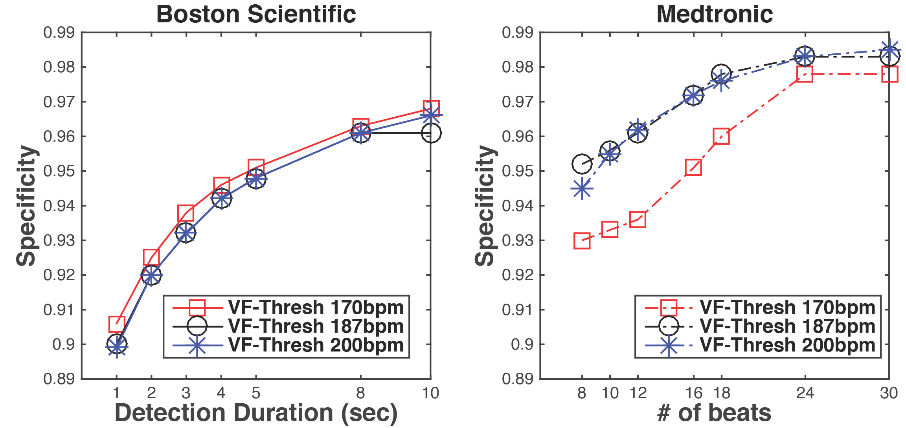

Overview
Clinical trials are the major bottleneck in getting new devices to market: they take several years, cost millions of dollars, and expose consenting patients to yet-unproven devices. My team is developing Computer-Aided Clinical Trials (CACT) as a formal and statistical framework that rigorously incorporates evidence generated from computer simulations and model-checking into the design of clinical trials. This can be used to reduce the necessary cohort size, increase trial power, and reduce the probability of failure.
A major obstacle to acceptance in-silico preclinical trials as regulatory-grade evidence is the lack of a framework for explicitly modeling sources of uncertainty in simulation results and quantifying the effect on trial outcomes. By formulating a CACT within a Bayesian statistical framework we can quantify the uncertainty propagation from modeling and simulation to capture the robustness across all stages of the trial. CACTs have been validated in retrospective clinical trials and in hardware testbeds where our heart models directly interact with commercial implantable cardiac devices.
Problem Statement
The safety and efficacy of high-risk medical devices are validated in clinical trials, in which the devices are evaluated on selected group of real patients. Clinical trials are expensive. Phase III trials can run for several years, cost millions of dollars, and expose patients to unproven devices.
In this work, we propose Computer-Aided Clinical Trials (CACT), which uses computer models of patient physiology to represent variability of patient conditions. CACTs can be performed with very little cost before an actual clinical trial and the results can potentially provide useful insights for planning and conduction of the actual clinical trial.

Case Study: Implantable Cardioverter Difibrillators
Implantable Cardioverter Difibrillators (ICDs) are designed to identify fatal heart conditions like Ventricular Tachycardia (VT) and deliver electrical shock to restore normal heart rhythm. A typical ICD has two leads inserted into the heart which measure local electrical activities in the right atrium and right ventricle, respectively. The electrical signals are referred to as Electrograms (EGMs).
Based on the timing and morphology of the EGMs, the ICD needs to distinguish between fatal Ventricular Tachycardia (VT) and non-fatal Supra-Ventricular Tachycardia (SVT). It is important to deliver therapy for all VTs, but therapies delivered during SVTs are considered as inappropriate. Inapprppriate shocks are decrimental to patient health and device manufacturers have developed algorithms to reduce the frequency of inappropriate therapies.
A clinical trial named Rhythm ID Head-to-head Trial (RIGHT) was conducted in 2005 to evaluate the rate of inappropriate therapies by two device algorithms: PRLogic from Medtronic and Rhythm ID from Boston Scientific. The trial lasted 6 years and the result was against the assumptions made before the trial, which makes the trial a failure. Imagine we are in 2005, can we use computer models to conduct a CACT and predict how the actual trial will go to prevent trial failure?

CACT for VT/SVT Discrimination
In this work, we developed a virtual population of patients consists of computer models of the heart and performed a virtual trial following RIGHT procedure. We showed that CACTs are capable of generating results that can provide insights to an actual clinical trial.
A CACT for VT/SVT discrimination can be divided into 4 steps. In Step 1 we extracted timing and morphological features of EGMs in different heart conditions from real-patient EGMs. In Step 2 we developed a timing model of the heart which can generate synthetic EGMs as inputs to the devices. In Step 3 we sample from the features extracted in Step 1 to generate a large virtual population of heart models. Then in Step 4 we connect the heart models with two device algorithms and evaluate their rate of inappropriate therapies.

Step 1: Feature Extraction From Patient Data
As first step, we would like to extract timing and morphology features from patient EGMs. The distributions of these parameters will be used to construct virtual cohort. The following figure shows how domain expert can identify and extract EGM morphologies from different sources.

Step 2: Physiological Modeling of The Heart
The physiological model of the heart consists of two components: the timing model and the morphology model. Together the model is able to generate synthetic EGMs as inputs to the device algorithms.
The timing model of the heart captures the timing of generation and conduction of electrical signals throughout the heart. More details of the timing model can be found HERE. The timing model not only provides the timing for events in both the atrial and ventricular channels, but also provides the source for each event, which determines the morphology of the event.
The morphology model of the heart is based on the clinical observation that electrical events with the same source have the same morphology. We extracted EGM morphologies from different sources in Step 1 and by overlying the EGM morphologies on timing events we are able to generate synthetic EGM singals.

Step 3: Synthetic Cohort Generation
The synthetic corhort was generated by sampling from the distributions of timing and morphology features of EGMs for different heart conditions. Due to the limited information contained in patient data, the distribution of some parameters cannot be extracted from patient data. For those parameters we used nominal values from literature.
Step 4: in silico trials for VT/SVT Discrimination Algorithms
in silico trials provide us the flexibility to evaluate devices not only on large population, but also in different patient distributions. We evaluated the two VT/SVT discrimination algorithms on different arrhythmia distributions and compared the rate of inappropriate therapy, which is shown below.

We can also obtain condition-specific results with high statistical significance, which cannot be done in real trials.

Inappropriate device programming is an important reason for inappropriate therapies. In real trials you cannot try different parameter settings on a single patient, and the parameter setting has to be specified according to the patient’s need. With in silico trials, we can test any parameter settings on each patient and have a better understanding of the effect of different parameters on specificity.

Publications
- Computer Aided Clinical Trials for Implantable Cardiac Devices
Jang, Kuk; Weimer, James; Abbas, Houssam; Jiang, Zhihao; Liang, Jackson; Dixit, Sanjay; Mangharam, Rahul
2018 40th Annual International Conference of the IEEE Engineering in Medicine and Biology Society (EMBC), 2018, Pages 1-4.
Link to Paper
Contributors
Kuk Jang, James Weimer, Houssam Abbas, Zhihao Jiang, Jackson Liang, Sanjay Dixit, Rahul Mangharam
Citation
@INPROCEEDINGS{8513284,
author={Jang, Kuk and Weimer, James and Abbas, Houssam and Jiang, Zhihao and Liang, Jackson and Dixit, Sanjay and Mangharam, Rahul},
booktitle={2018 40th Annual International Conference of the IEEE Engineering in Medicine and Biology Society (EMBC)},
title={Computer Aided Clinical Trials for Implantaule Cardiac Devices},
year={2018},
volume={},
number={},
pages={1-4},
keywords={Physiology;Uncertainty;Clinical trials;Heart;Computational modeling},
doi={10.1109/EMBC.2018.8513284}}